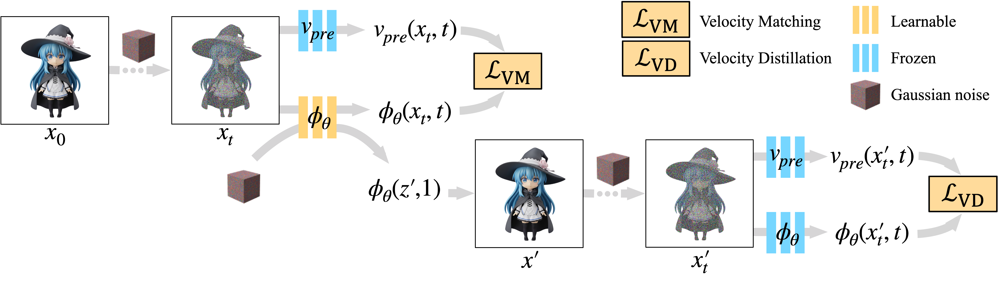

Few-step Flow for 3D Generation via
Marginal-Data Transport Distillation
*Equal contribution †Corresponding author
We propose Marginal-Data Transport Distillation to speed up the 3D generation model (i.e. TRELLIS) to only 1-2 steps, which can generate a 3D asset in 0.68s on one A800 GPU with both appearance and geometry.
Flow-based 3D generation models typically require dozens of sampling steps during inference.
Though few-step distillation methods, particularly Consistency Models (CMs), have achieved substantial advancements in accelerating 2D diffusion models,
they remain under-explored for more complex 3D generation tasks.
In this study, we propose a novel framework, MDT-dist, for few-step 3D flow distillation.
Our approach is built upon a primary objective:
distilling the pretrained model to learn the
Marginal-Data Transport.
Directly learning this objective needs to integrate the velocity fields, while this integral is intractable to be implemented.
Therefore, we propose two optimizable objectives, Velocity Matching (VM) and Velocity Distillation (VD),
to equivalently convert the optimization target from the transport level to the velocity and the distribution level respectively.
Velocity Matching (VM) learns to stably match the velocity fields between the student and the teacher,
but inevitably provides biased gradient estimates.
Velocity Distillation (VD) further enhances the optimization process by leveraging the learned velocity fields to perform probability density distillation.
When evaluated on the pioneer 3D generation framework TRELLIS, our method reduces sampling steps of each flow transformer from 25 to 1–2,
achieving 0.68s (1 step x2) and 0.94s (2 steps x2) latency with 9.0x and 6.5x speedup on A800, while preserving high visual and geometric fidelity.
Extensive experiments demonstrate that our method significantly outperforms existing CM distillation methods,
and enables TRELLIS to achieve superior performance in few-step 3D generation.

The primary objective of our framework is to learn the transport from the marginal distribution to the data distribution.
Based on it we propose two optimization objectives: Velocity Matching and Velocity Distillation.
Velocity Matching directly supervises the student model via matching the velocity fields between the student and teacher,
while Velocity Distillation indirectly supervises the student model via matching the marginal distributions between the student and teacher.
This project page is based on TRELLIS. We sincerely appreciate the excellent works of these authors.
If you find our work useful, please consider citing:
@article{mdt-dist,
title={Few-step Flow for 3D Generation via Marginal-Data Transport Distillation},
author={Zhou, Zanwei and Yi, Taoran and Fang, Jiemin and Yang, Chen and Xie, Lingxi and Wang, Xinggang and Shen, Wei and Tian, Qi}
journal={arXiv:2509.04406},
year={2025}
}